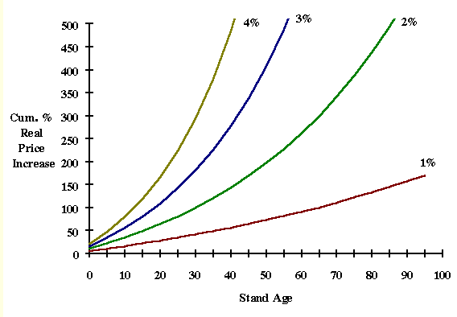

Edit or view the selected definition.

Create a new definition.
In this Topic Hide
Discount Assumptions definitions are selected and/or defined using the drop-down pick-list and accompanying icons in the top right corner of the Main Setting area, within FAN$IER's Main Screen.
The drop-down pick-list contains all the definitions currently available for assigning to the Project. "FAN$IER Defaults" is the default definition provided.
Note: The selected (displayed) definition is applied to all Regimes in the Project, with one exception. I.e., Discount Assumptions can be modified for individual Regimes while they are being displayed within the Compare Tab.
Definitions can be created or edited (viewed) using the two icons to the right of the drop-down pick-list:
|
Edit or view the selected definition. |
|
Create a new definition. |
Discount rate is used to convert future values within analyses into equivalent present values. Heaps and Pratt (1989)1 examined the social opportunity cost of public sector investments in Canada. For silviculture investments, they argue that the appropriate range is between 3 and 5%. Therefore, FAN$IER uses a default rate of 4%, the allowed range is 0 to 10%.
Attention FFT Users: The Discount Rate setting does not affect internal rate of return (IRR), nor the FFT ROI threshold. "FAN$IER Defaults" are sufficient for FFT use.
FAN$IER lets you include the impacts of an assumed real per annum price increase. The allowed range is -2% to 5% (default 0%). Thus, real price decreases are also allowed.
The term "real prices" refers to prices that have been adjusted for inflation and expressed in constant (2006) dollars.
Given the lack of any clear trend in end-product real prices over time, we should be cautious about extrapolating any assumptions of real price increases into the future. Figure 68 below shows an example of this. If extended over a rotation of 75 years, these assumed per annum price increases would result in cumulative real price increases of 111%, 342%, 818% and 1,795% respectively. You can reduce the compounding effect of an assumed per annum price increase by limiting the period over which the compounding takes place. For example, an assumption of a 1% per annum real price increase over the first 25 years with no real price increase thereafter results in a cumulative real price increase of 28%.

FIGURE 68. Cumulative Real Price Increase over 100 years at 1, 2, 3, and 4% per year.
Naturally, if we consider the possibility of future real price increases, then the possibility of future real harvest and milling cost increases should also be considered. FAN$IER accommodates this in the same manner as a real price increase. The allowed range is -2% to 5% (default 0%). Thus, real cost decreases are also allowed.
This is the duration of both the real price and real cost increases. The default is 25 years. Note the duration effect illustrated in Figure 68 above.
This applies to the optional Incremental IRR (Reinvestment method) available in the Compare Tab, The reinvestment rate is the rate of return one assumes could be realized from reinvesting net harvest benefits received from the shorter regime until the longer regime is harvested. The default is 2% (the FFT IRR threshold). Other options to consider include the above Discount Rate, or the stand-alone IRR of the shorter rotation.
This is the per annum rate used to adjust user-specified costs to a constant 2006 dollar basis. It is the mean annual inflation rate, or the mean annual increase in the Consumer Price Index (i.e., 2% by default).
Normally, costs and benefits accrued before the age at base year are ignored. FAN$IER will include them when this box is checked, but the specified base year remains in effect.
This checkbox activates costs denoted as "Tax" (currently, Property Tax is the only one). I.e., Property Tax values entered in the Cost Tab will only be applied if this is checked.
Applies all regeneration costs at harvest age, specifically Survey & Prescription, Site Preparation, Destumping, Tree Improvement, Planting, and Brushing & Weeding.
Enables (re)naming of the Discount Assumption definition.
1 Heaps, T. and B. Pratt, 1989. The social discount rate for silvicultural investments. Ministry of Forests and Forestry Canada, Forest Resource Development Agreement, FRDA Report 071. Victoria, B.C.